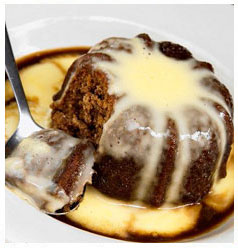

Malva pudding recipe

Ingredients:
Pudding
- 30ml(2T) Butter/Marg
- 125ml Huletts White Sugar
- 1 Extra Large Egg
- 15ml(1T) Apricot Jam
- 5ml (1t) Bicarbonate of Soda
- 125ml (1/2C)Milk
- 250ml (1C) Cake Flour
- Pinch of Salt
- 15ml (1T) Vinegar
Sauce
- 125g Butter/Marg
- 185ml (3/4C)Huletts White Sugar
- 65ml (1/4C) Water
- 185ml(3/4C) Cream
- 5ml (1t) Vanilla essence
Method:
Pudding
- Cream butter and sugar together, beat in the egg until light and fluffy.
- Beat in the apricot jam.
- Dissolve the bicarb in the milk.
- Sift the flour and salt together and add to the creamed mixture alternately with the milk.
- Lastly stir in the vinegar.
- Pour into a deep round dish about 19cm diameter. Cover the dish with a lid or foil and then bake for 1 hour at 180◦C.
Sauce
- Bring the butter, sugar and water to the boil and simmer, stirring all the time for 2 minutes.
- Remove from the stove and then add the cream and the vanilla. Pour over the hot baked pudding.